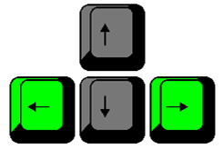

Instrukcija
Tavs mērķis ir pēc iespējas ātrāk iznīcināt visus spēles laukumā esošos ķieģeļus 3 dažādu līmeņu laikā. To ir iespējams izdarīt atvairot bumbu, izmantojot kustīgo taisnstūrveidīgo objektu. Ja bumba pieskaras sarkanajai līnijai, tu zaudē vienu no trim dzīvībām. Ja tev beidzas dzīvības, tad tu zaudē.
Kas atrodas spēles laukumā?
Spēles laukumā atrodas:
- iznīcināmie (zaļie, dzeltenie un sarkanie) ķieģeļi,
- iznīcinot šos ķieģeļus, iegūst punktus;
- bumba,
- bumba ir brīvi kustīgais, neatkarīgais objekts, kurš spēj iznīcināt ķieģeļus, kuru tev jāatvaira no sarkanās līnijas un jāvirza uz ķieģeļu pusi;
- taisnstūrveidīgais objekts,
- tu kontrolē šo objektu,
- tas kustās tikai pa labi un pa kreisi,
- tas spēj atvairīt bumbu;
- sarkanā līnija,
- līnija, kurai bumba nevar pieskarties, citādi tu zaudē dzīvību.
Kā iegūt punktus?
Punktus tu iegūsti bumbai iznīcinot ķieģeli, bet ne visi ķieģeļi dod vienu un to pašu punktu skaitu. Punktu aprēķins:
| Kādas krāsas ķieģelis iznīcināts? | Iegūtais punktu skaits |
|---|---|
| Zaļas | 1 |
| Dzeltenas | 2 |
| Sarkanas | 3 |
Kā kontrolēt taisnstūrveidīgo objektu?
Taisnstūrveidīgo objektu var kontrolēt izmantojot tastatūru – bultiņa pa kreisi to virza tikai pa kreisi, bet bultiņa pa labi to virza tikai pa labi. Tā mērķis ir atsist bumbu un neļaut tai pieskarties sarkanajai līnijai, kā arī virzīt to uz ķieģeļu pusi. |
 |
Kas ir līmeņi?
Spēles gaitā ir 3 līmeņi – iznīcinot visus ķieģeļus vienā līmenī, spēlētājs tiek pārvietots uz nākamo līmeni. Ar katru līmeni spēle paliek grūtāka – mainās bumbas ātrums un ķieģeļu izkārtojums.
Kas ir dzīvības, kas notiek, kad bumba pieskaras sarkanajai līnijai?
Tev ir 3 dzīvības. Katru reizi, kad bumba pieskaras sarkanajai līnijai, tu zaudē vienu dzīvību. Ja tev ir iztērēta tava pēdējā (trešā) dzīvība, tad tu zaudē spēli un spēle beigsies.
Spēles beigas.
Uzvaras gadījumā: parādās paziņojums “WINNER”, un tava spēles statistika. Sacenties ar draugiem un salīdziniet jūsu ātrumu!
Zaudēšanas gadījumā: parādās paziņojums “Game Over”, un tava spēles statistika. Tev spēle jāsāk no jauna, ja vēlies turpināt spēlēt.